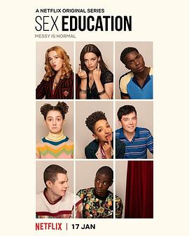

性爱自修室 第二季 / Sex Education Season 2
又名：性教育
作品信息
| 导演 | 本·泰勒 / 索菲·古德哈特 / 艾丽斯·西布赖特 |
| 编剧 | 劳瑞·纳恩 / 马万·里兹旺 / 索菲·古德哈特 / 罗茜·琼斯 / 理查德·加德 |
| 主演 | 阿萨·巴特菲尔德 / 吉莲·安德森 / 舒提·盖特瓦 / 艾玛·麦基 / 康纳·斯温德尔 / 凯达·威廉姆斯特灵 / 艾米·卢·伍德 / 钱尼尔·库勒 / 塔尼娅·雷诺兹 / 帕特里夏·艾莉森 / 米卡埃尔·佩斯布兰特 / 阿利斯泰尔·皮特里 / 安-玛莉·杜芙 / 詹姆斯·鲍弗 / 斯蒂芬·弗雷 / 吉姆·霍威克 / 拉卡·塔克雷尔 / 萨曼莎·斯毕洛 / 萨米·瓦塔尔巴利 / 乔治·罗宾森 / 克里斯·詹克斯 / 钦尼·埃祖杜 / 汉娜·沃丁厄姆 / 莎伦·邓肯-布鲁斯特 / 西蒙娜·阿什利 / 利诺·法希奥利 / 米米·基恩 / 米伦·麦克 / 乔治·索纳 / 泰尼亚·米勒 / 莉莉·纽马克 / Lisa Palfrey / Joe Wilkinson / Doreene Blackstock / George Georgiou / Sarah Malin / Myriam Acharki / Jonny Muir / Dee Ahluwalia |
| 类型 | 剧情 / 喜剧 |
| 制片国家/地区 | 英国 |
| 语言 | 英语 |
| 首播 | 2020-01-17(美国) |
| 季数 | 2 |
| 集数 | 8 |
| 单集片长 | 50分钟 |
| IMDb | tt9699184 |
最后一次看到是 2026-08-12T21:11:36+08:00 · 豆瓣原页